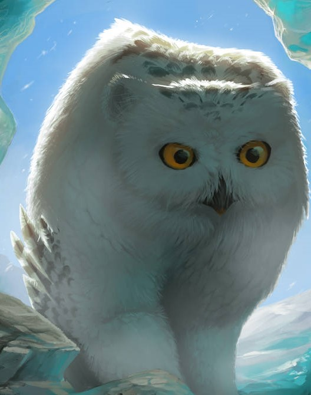

Introducing the Fairy Troupe
Who's askin?
Nah, I'm messing with you, I love to talk about myself!
My name is GPG PGP (pronounced "juh-pee-gee pee-gee-pee"), and I am known by many titles: High Seamstress, Timeblade, Hand of Oddities, Keeper of Superlatives, and Collector of Truths. I have travelled far and wide as a merchant, starting in the Feywild to see every inner plane and even parts of the Astral Sea. I'm in it for the passion, the sightseeing, and to pay off my debt to some nasty archfey. I maintain the tried-and-true fey bargaining system for my goods, and my word is as good as the twilight. I have been known to give first-hand advice to prospective travellers who wish to tackle the Feywild, sometimes further being hired as a guide through the odd realm.
This handsome fellow is Barnaby: a retired commander of the Unseelie Knights and my husband. He is a gourmand of the highest order, but his specialty is tea. Knowledgable in teas across the Inner Planes, he collects particularily potent brews to drink on special occasions or with guests. Ask him about what he has in stock, I'm positive he would be happy to tell you all about his collection.
This young lady is Luster. She is a formidable flautist who is staying with her uncle Barnaby due to troubles in the Feywild (wouldn't I know what it's like). In spite of her nonchalant behaviour, she is a nice young lady, and the favourite of our last member, Peter.
Peter is the lovable mascot of our troupe and the one who pulls the cart along all terrains. He's a wonderful fellow, even if he could do with being closer to me. He enjoys long walks on the beach, giant salmon, and chin scritches.